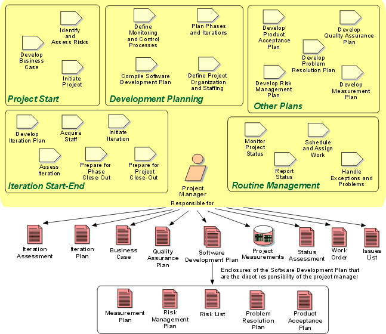

Role:
Project Manager
The project manager role allocates resources, shapes priorities, coordinates
interactions with customers and users, and generally keeps the project team
focused on the right goal. The project manager also establishes a set of
practices that ensure the integrity and quality of project artifacts.

Staffing 
The skills and experience needed to fulfill the Project Manager role will
depend on the size, and technical and management complexity of the project, but
in varying degrees, to play the Project Manager role as defined by the Rational
Unified Process, you must:
- be experienced in the domain of the application, and in software
development
- have risk analysis and management, estimation, planning and decision
analysis skills
- have presentation and communication and negotiation skills
- show leadership and team building capabilities
- have good time management and triage skills, and a history of making sound
decisions quickly under stress
- have good interpersonal skills and show sound judgment in staff selection
- be objective in setting and assessing work, ensuring team buy-in
- share the architectural vision, but be pragmatic in the scoping and
implementation of plans, and scrupulously honest in the assessment of
outcomes
- be focused on the delivery of customer value, in the form of executing
software that meets (or exceeds) the customer's needs.
Copyright
© 1987 - 2001 Rational Software Corporation
| |

|
 Roles and Activities >
Roles and Activities >
 Project Manager
Project Manager